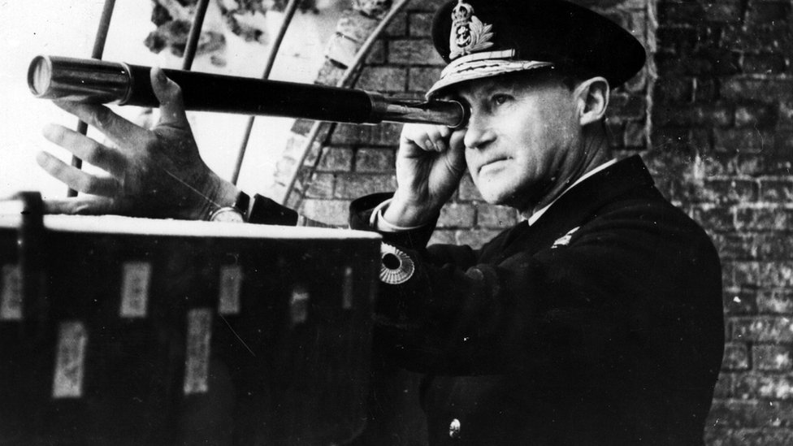
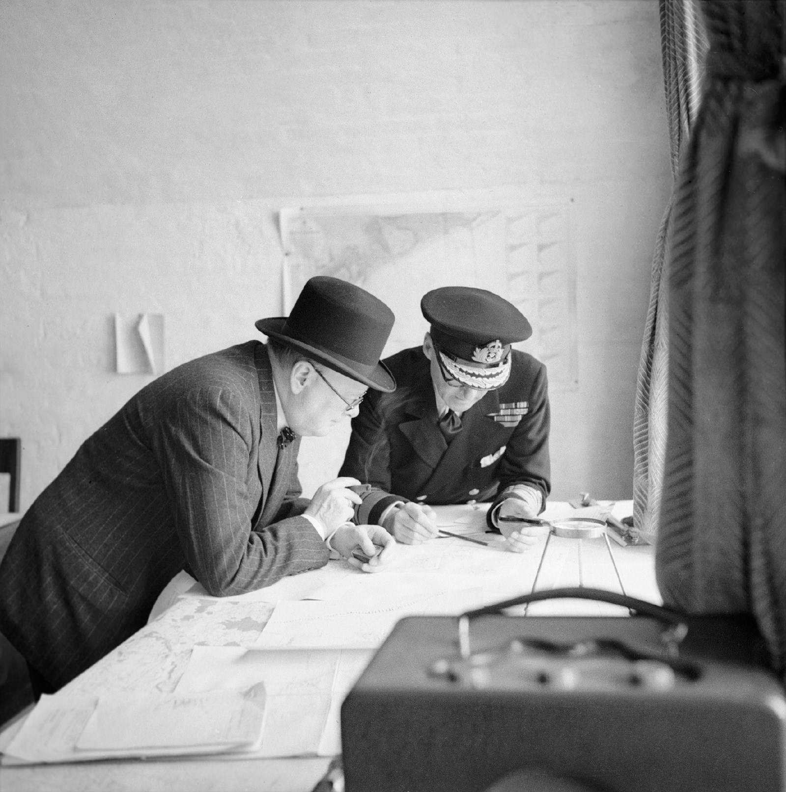
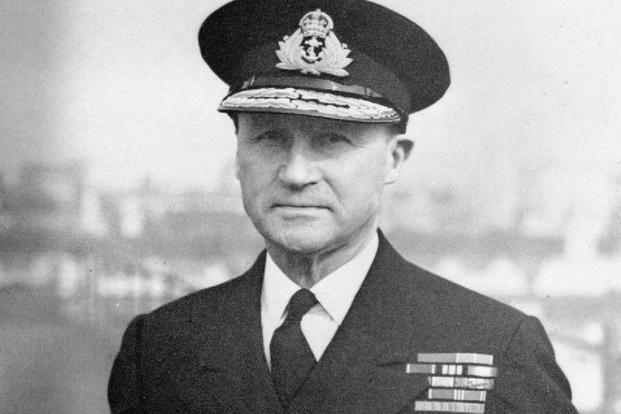
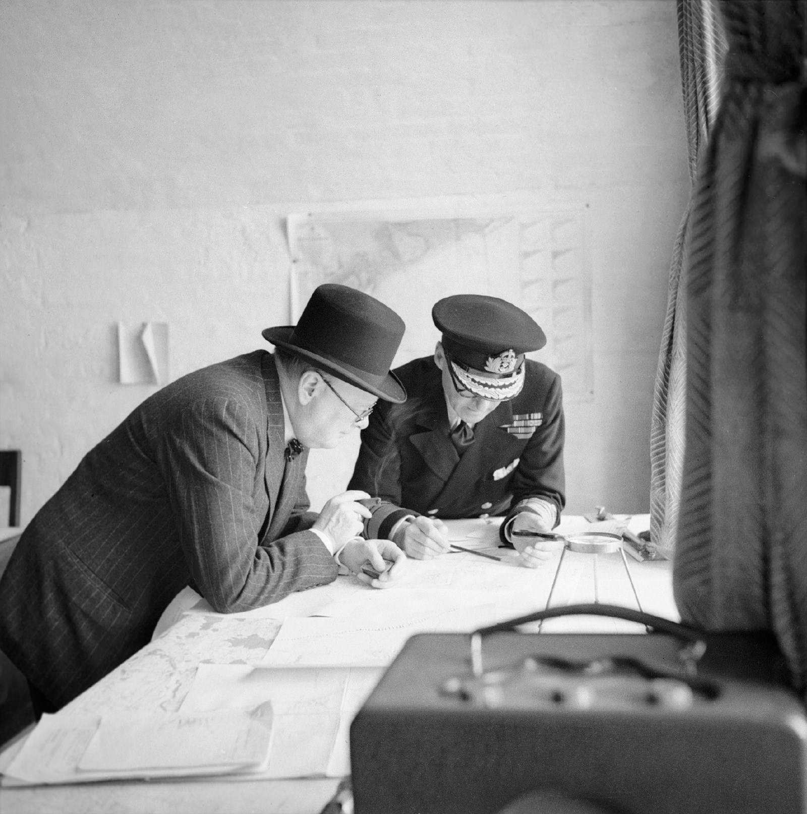
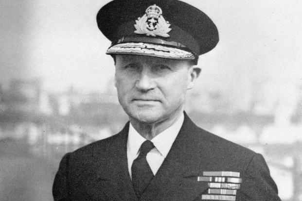

THE MAN
OPERATION DYNAMO
THE MISSION
THE MAN
THE IMPACT
Who was Vice Admiral Bertram Ramsay?
Vice Admiral Bertram Ramsay was a royal naval officer, who served from 1898,
until his death at age 65 in 1945. During World War I he commanded the HMS
Broke, a destroyer of the Royal Navy, and in World War II was the head of
many different military operations, primarily operation dynamo. Ramsay was
a decorated officer, and had his fair share of contributions to the Royal
Navy, and United Kingdom as a whole. In 1945 Ramsay was killed when his
plane crashed at take off, while on his way to a conference with General
Bernard Montgomery. A memorial was made in his and all others who died
honor in 1995.
Ramsay's contribution
Overall, operation dynamo was seen as a major success.
Over 300,000 allied soldiers were saved, and despite
the major loss of equipment, the most valuable asset
was saved: the soldiers. However, none of this could
have been done without Vice Admiral Betram Ramsay.
Ramsay was the main coordinator of the operation, and
through his decisive planning, quick thinking, and
overall leadership capabilities, he was able to save
the lives of thousands.
 


